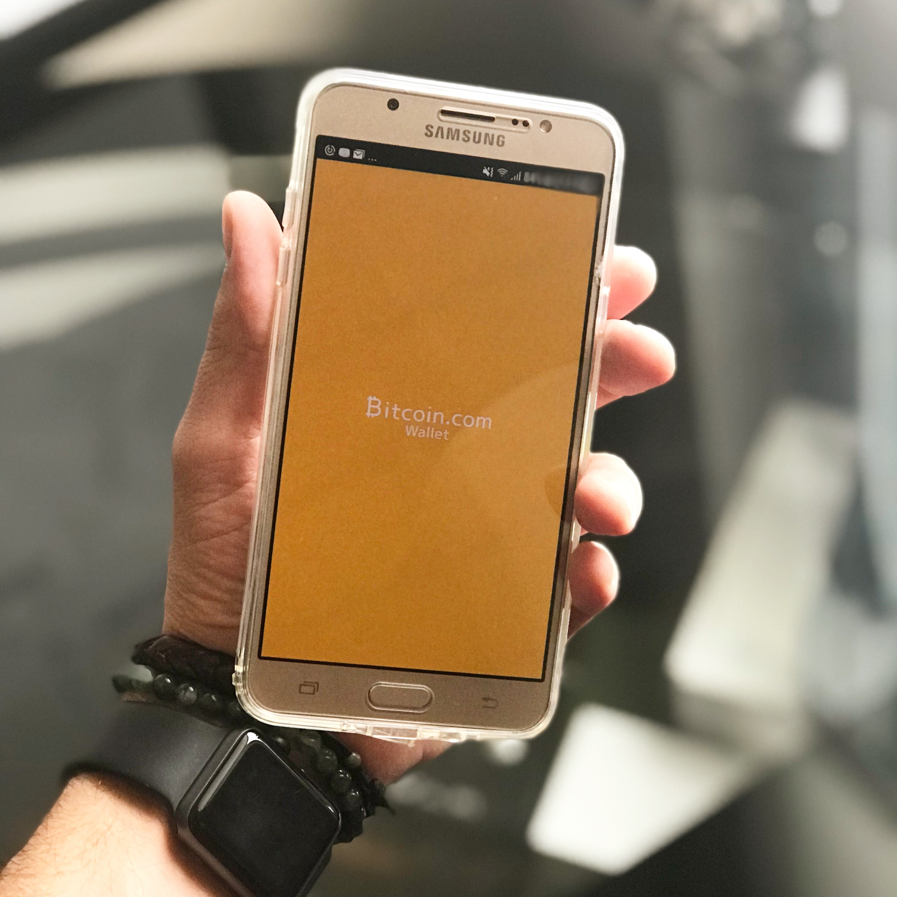
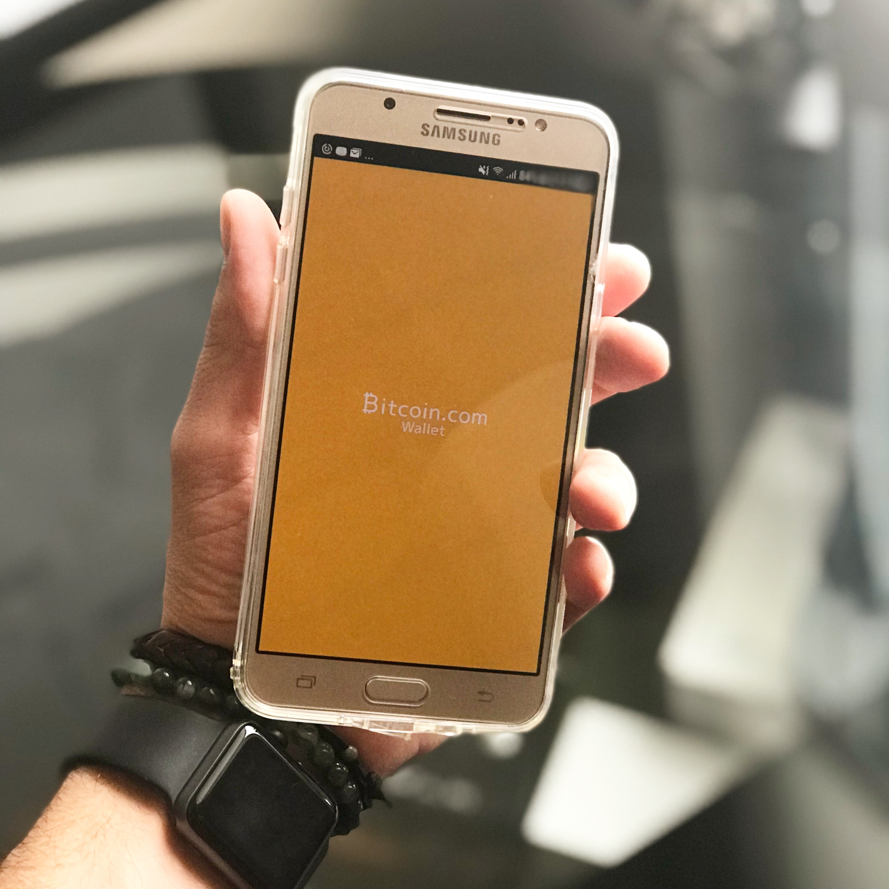

The blockchain is an undeniably ingenious invention – the brainchild of a person or group of people known by the pseudonym, Satoshi Nakamoto. But since then, it has evolved into something greater, and the main question every single person is asking is: What is Blockchain? By allowing digital information to be distributed but not copied, blockchain technology created the backbone of a new type of internet. Originally devised for the digital currency, Bitcoin, the tech community has now found other potential uses for the technology.
If this technology is so complex, why call it “blockchain?” At its most basic level, blockchain is literally just a chain of blocks, but not in the traditional sense of those words. When we say the words “block” and “chain” in this context, we are actually talking about digital information (the “block”) stored in a public database (the “chain”). “Blocks” on the blockchain are made up of digital pieces of information. Specifically, they have three parts:
1.Blocks store information about transactions, say the date, time, and dollar amount of your most recent purchase from Amazon. (NOTE: This Amazon example is for illustrative purchases; Amazon retail does not work on a blockchain principle)
2. Blocks store information about who is participating in transactions. A block for your splurge purchase from Amazon would record your name along with Amazon.com, Inc. Instead of using your actual name, your purchase is recorded without any identifying information using a unique “digital signature,” sort of like a username.
3. Blocks store information that distinguishes them from other blocks. Much like you and I have names to distinguish us from one another, each block stores a unique code called a “hash” that allows us to tell it apart from every other block. Let’s say you made your splurge purchase on Amazon, but while it’s in transit, you decide you just can’t resist and need a second one. Even though the details of your new transaction would look nearly identical to your earlier purchase, we can still tell the blocks apart because of their unique codes.
While the block in the example above is being used to store a single purchase from Amazon, the reality is a little different. A single block on the blockchain can actually store up to 1 MB of data. Depending on the size of the transactions, that means a single block can house a few thousand transactions under one roof.
When a block stores new data it is added to the blockchain. Blockchain, as its name suggests, consists of multiple blocks strung together. In order for a block to be added to the blockchain, however, four things must happen:
1. A transaction must occur. Let’s continue with the example of your impulsive Amazon purchase. After hastily clicking through multiple checkout prompts, you go against your better judgment and make a purchase.
2. That transaction must be verified. After making that purchase, your transaction must be verified. With other public records of information, like the Securities Exchange Commission, Wikipedia, or your local library, there’s someone in charge of vetting new data entries. With blockchain, however, that job is left up to a network of computers. These networks often consist of thousands (or in the case of Bitcoin, about 5 million) computers spread across the globe. When you make your purchase from Amazon, that network of computers rushes to check that your transaction happened in the way you said it did. That is, they confirm the details of the purchase, including the transaction’s time, dollar amount, and participants.
3. That transaction must be stored in a block. After your transaction has been verified as accurate, it gets the green light. The transaction’s dollar amount, your digital signature, and Amazon’s digital signature are all stored in a block. There, the transaction will likely join hundreds, or thousands, of others like it.
4. That block must be given a hash. Not unlike an angel earning its wings, once all of a block’s transactions have been verified, it must be given a unique, identifying code called a hash. The block is also given the hash of the most recent block added to the blockchain. Once hashed, the block can be added to the blockchain.
When that new block is added to the blockchain, it becomes publicly available for anyone to view — even you. If you take a look at Bitcoin’s blockchain, you will see that you have access to transaction data, along with information about when (“Time”), where (“Height”), and by who (“Relayed By”) the block was added to the blockchain.